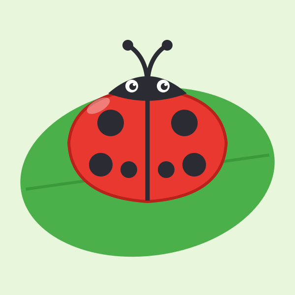
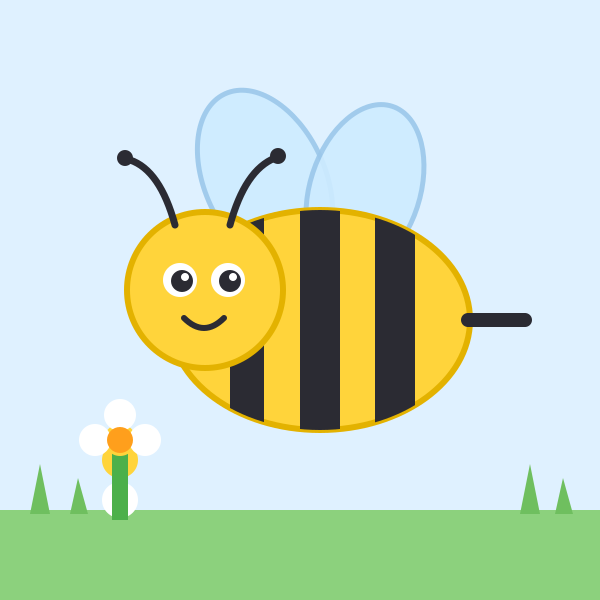
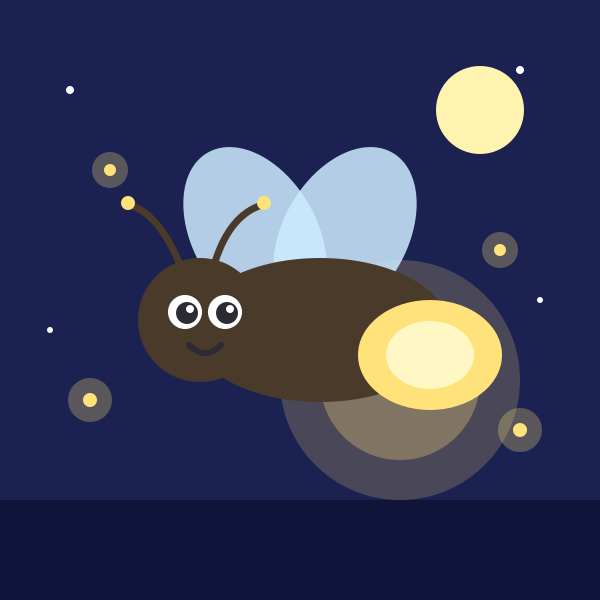
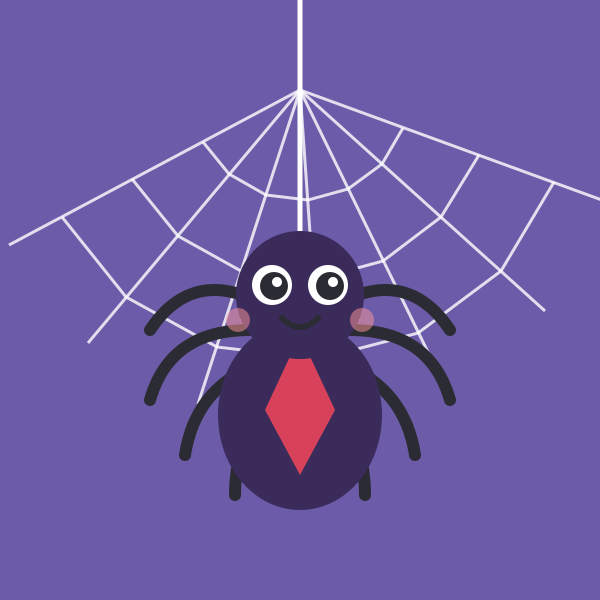
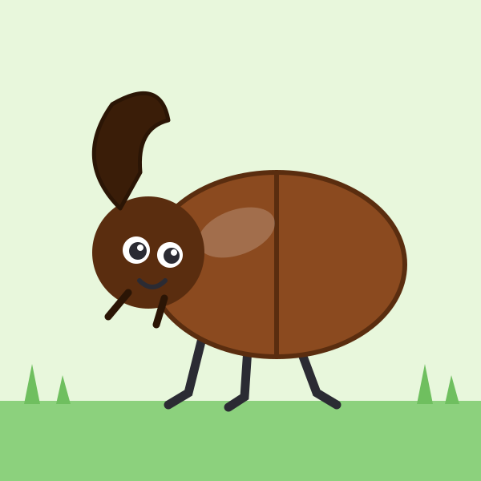
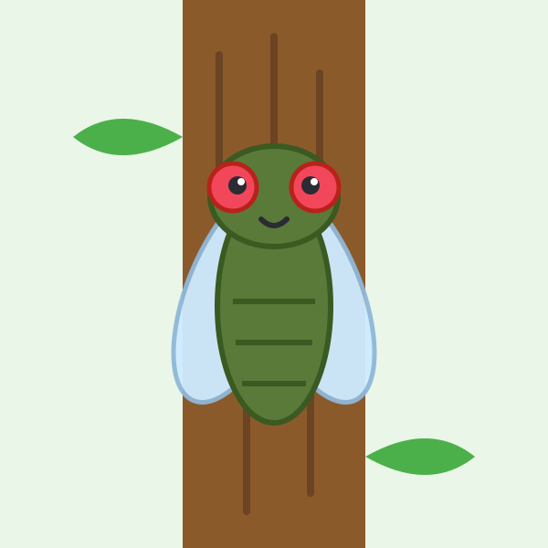
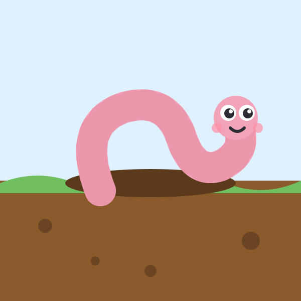
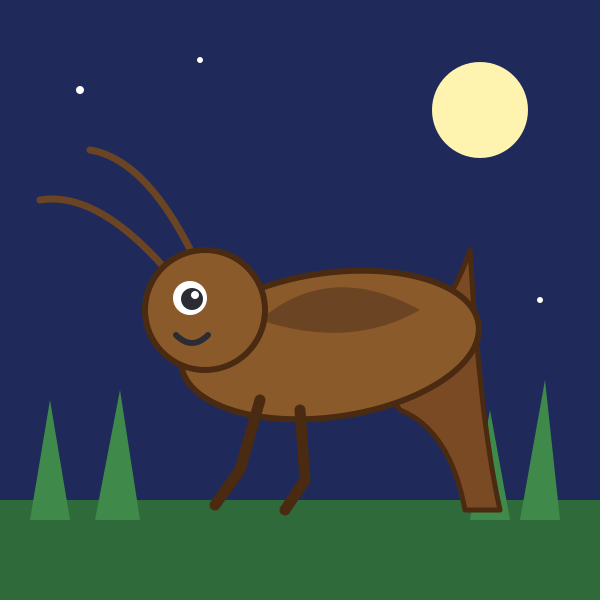

首頁 › 主題 › 野外昆蟲
🐞 野外昆蟲拼圖
瓢蟲、蜜蜂、蜻蜓、螞蟻、螳螂、螢火蟲……這個主題收錄 16 種野外常見的小生物，鼓勵孩子觀察並愛護身邊的小生命。
小知識：蝸牛、蚯蚓和蜘蛛嚴格來說不是昆蟲，但同樣是野外常見的小動物，所以一起收錄在這個主題。
可以選擇 9、12 或 16 片，並切換拼圖形或方塊，由簡單到困難慢慢挑戰。免費、免註冊。
這個主題裡有什麼？（共 16 張）
點選任一張圖片，就可以直接開始拼。

瓢蟲 
蜜蜂 
毛毛蟲 
蜻蜓 
螞蟻 
蝸牛 
蚱蜢 
螢火蟲 
蜘蛛 
獨角仙 
蟬 
螳螂 
蚯蚓 
鍬形蟲 
飛蛾 
蟋蟀
學習重點
- 認識常見昆蟲與小動物的外形
- 觀察身體部位（翅膀、觸角、腳的數量）
- 培養尊重、愛護生命的態度
和孩子一起聊聊
拼完之後，可以試著問孩子：
- 牠有幾隻腳？有沒有翅膀？
- 牠喜歡住在哪裡？吃什麼？
- 看到小蟲的時候，我們可以怎麼做？